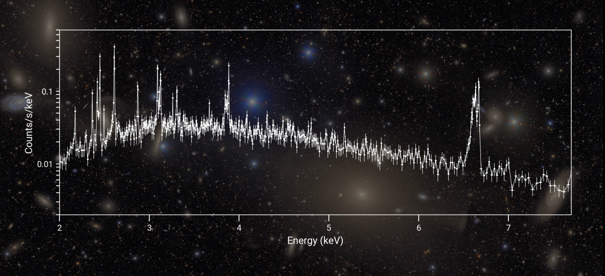
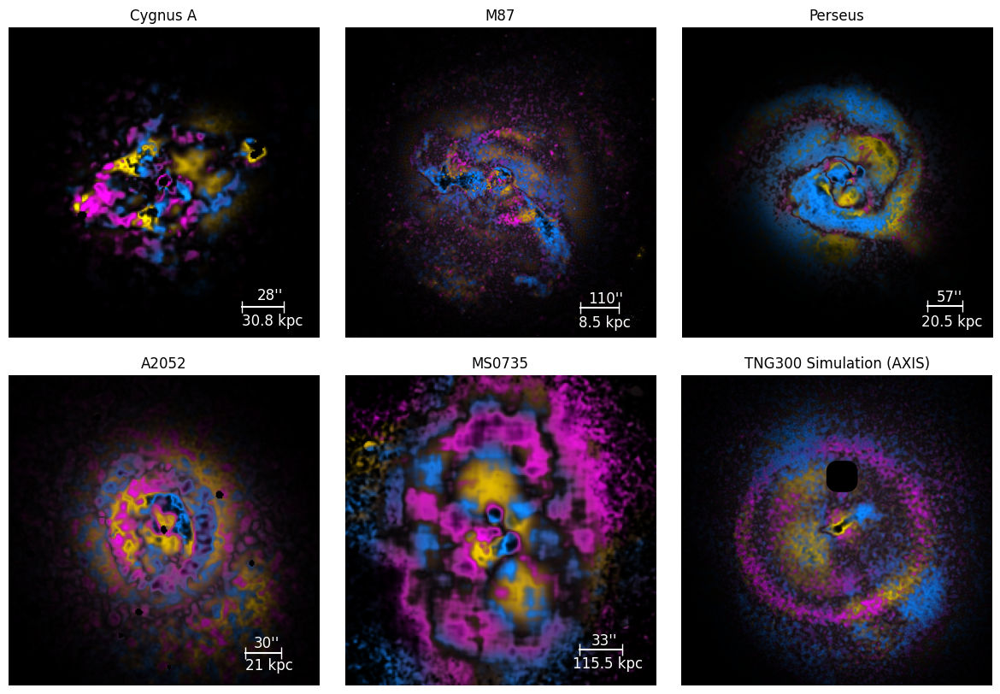

Research
Recent publication: M87 with XRISM

XRISM is an exciting new X-ray instrument that launched in 2023. It offers the first ever opportunity to directly measure velocities in massive systems. As part of its performance verification (PV) phase, XRISM observed M87, the central galaxy of the Virgo Cluster. M87 is the nearest example of active galactic nuclei (AGN) feedback in a galaxy cluster, so with XRISM we can study feedback at smaller scales (down to 5 kpc!) than is possible in any other object. I led a paper on the kinematics of the innermost regions of M87. You can read about the findings in the press release here!
Press release: X-arithmetic

Supermassive black holes create a whole host of structures in the hot gas in galaxy clusters. "X-arithmetic" is an image manipulation technique that aids in identification of the nature of these structures. I applied the method to 15 galaxy groups and clusters deeply observed with Chandra. I also showed that the method is applicable to cosmological simulations of clusters. Check out the NASA press release featuring this work!
You can find the X-arithmetic code to apply to your own galaxy cluster or simulation data here.